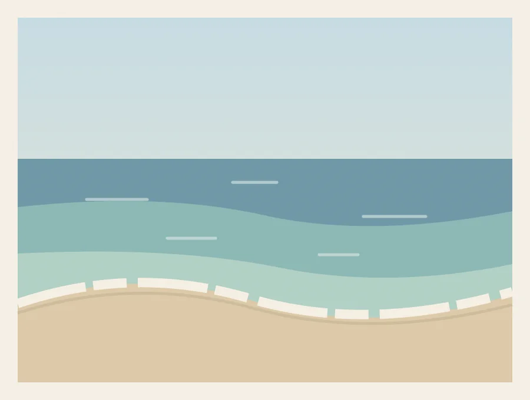
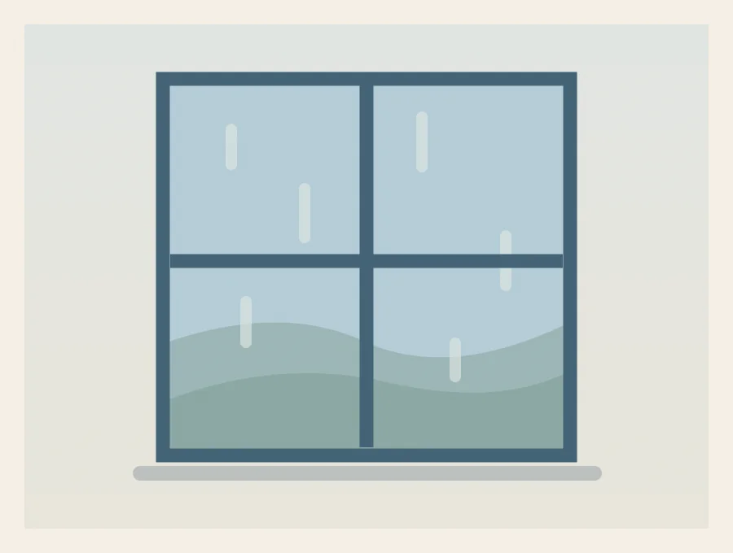

Choose a lesson, gather your supplies, and take it one step at a time. The time estimates cover hands-on painting; drying may take longer.
Which paint should I try?
Acrylic is useful for bold, opaque color and painting over dry layers. Blend while it’s wet, and rinse your brushes before the paint dries.
Watercolor uses water and the white of the paper to create light washes. Start pale, leave some paper untouched, and let layers dry between steps.
6 lessons to try
01 / Acrylic · Beginner · 30 minutes
A small evening sky
Blend a peach-colored horizon into a soft blue sky, then add a quiet silhouette.
Open the lesson
What you’ll need
A small canvas or acrylic paper
Acrylic paint: blue, red, yellow, and white
One flat brush and one small round brush
A palette, water cup, and cloth
Color mood: Sky blue, Peach, White, Deep navy.
Let’s paint
Set up your colors
Protect your table. Mix a pale blue with white and a little blue. Mix peach with white, a small amount of red, and a touch of yellow. Keep a separate puddle of white.
Place the horizon
Choose a horizon slightly below the middle of your surface. Paint the upper area pale blue and the lower part of the sky peach. Use a damp, not dripping, flat brush.
Soften the meeting point
While both colors are wet, move the brush gently from side to side where they meet. Wipe the brush between passes. Add white if the middle looks too dark.
Add the sun
Let the background dry to the touch. Paint a small pale circle near the horizon. Keep its edge soft by lightly brushing around it with the sky color.
Make a silhouette
Mix a deep navy from blue with a little red. Paint a low uneven hill along the bottom. Add two or three slender grass marks with the round brush.
Let it rest
Stop before filling every empty space. Let the painting dry flat. Rinse your brushes before acrylic paint dries in the bristles.
A little tip: If the sky dries before it blends, let it dry completely and paint a fresh thin layer. Scrubbing a half-dry layer usually makes it patchy.
02 / Acrylic · Beginner · 35 minutes
Little daisies in blue
Practice simple petal strokes with a loose handful of white daisies and leafy stems.
Open the lesson
What you’ll need
Acrylic paper or a small canvas
Acrylic paint: blue, yellow, white, and a little red
A medium flat brush and a small round brush
A palette, water cup, and cloth
Color mood: Pale blue, White, Golden yellow, Leaf green.
Let’s paint
Paint a calm background
Mix blue into plenty of white. Cover your surface with an even, thin layer using the flat brush. Leave it until it is dry to the touch.
Choose three flower centers
Place three small yellow circles at different heights. Keep them away from the exact center of the page so the arrangement feels relaxed.
Pull the petals outward
Load the round brush with white. Press near a yellow center, pull outward, and lift. Repeat around each center. The petals can vary in length and spacing.
Connect the stems
Mix green from blue and yellow. With the tip of the brush, draw a thin stem downward from each flower. Let the stems overlap naturally.
Add a few leaves
Use a press-and-lift stroke on either side of the stems. Paint only a few leaves so the flowers stay easy to see.
Finish the centers
Add a tiny touch of warm yellow to each center and a few white highlights to the petals. Clean the brushes and let the painting dry.
A little tip: Practice one petal on scrap paper first. A loaded brush and a single confident stroke often work better than tracing each petal.

03 / Acrylic · Next step · 45 minutes
Sea, shore, and a slow afternoon
Build a coastal scene with a straight horizon and a few broken lines of sea foam.
Open the lesson
What you’ll need
Acrylic paper or canvas
Acrylic paint: blue, green, yellow, white, and brown
A wide flat brush and a small round brush
A palette, water cup, and cloth
Color mood: Ocean blue, Turquoise, Sand, White.
Let’s paint
Block in three areas
Sketch a light horizontal line above the middle. Paint pale blue above it, a deeper blue band below it, and a warm sand area at the bottom.
Keep the horizon clear
Use the narrow edge of the flat brush to tidy the sea horizon. Keep this line mostly level while the beach edge can curve.
Change the water color
Mix blue, a little green, and white. Add this lighter turquoise near the shore. Blend it gently into the deeper water while the paint is wet.
Suggest small waves
After the water dries, add a few short horizontal strokes in lighter blue. Leave gaps between them instead of covering the entire sea.
Paint the foam
With a small amount of white paint, place broken curved marks along the shore. Make the front edge irregular so it feels like moving water.
Add sand shadows
Mix a little brown into the sand color. Paint a narrow shadow behind the foam and soften it with the original sand color. Let the work dry flat.
A little tip: Use less white than you expect for foam. A few broken strokes are enough to suggest waves without hiding the water.
04 / Watercolor · Beginner · 30 minutes
Misty blue hills
Explore light washes and layered hills, leaving a little white paper between them.
Open the lesson
What you’ll need
Watercolor paper, ideally 300 gsm
Blue watercolor and an optional second cool color
A medium round watercolor brush
Two water cups, a palette, and a paper towel
Color mood: Pale blue, Slate blue, Deep blue.
Let’s paint
Prepare your washes
Mix three puddles of blue: very pale, medium, and deeper. Tape the paper to a board if you have low-tack artist tape. Use clean water for mixing.
Wash the sky
Wet the upper part of the paper lightly. Brush in the palest blue, keeping some white near the horizon. Tilt the paper gently if paint collects in one spot.
Paint a distant ridge
Wait until the sky is dry. Use the pale wash to paint an uneven hill across the upper middle. Pull the color downward with a damp brush.
Layer the middle hill
When the first hill dries, paint a lower ridge with the medium wash. Leave a narrow, uneven strip of white paper between parts of the hills.
Bring the last hill forward
Paint the nearest ridge with the deeper wash. Keep its shape simple and place it lower than the other hills.
Check the balance
Let everything dry before deciding whether it needs more color. Remove tape slowly, pulling it away from the painting at a low angle.
A little tip: Dry layers keep the hill edges clear. If you add another ridge while the paper is wet, the colors will flow together.
05 / Watercolor · Beginner · 20 minutes
A page of little leaves
Learn a press-and-lift brushstroke through a small botanical study in soft greens.
Open the lesson
What you’ll need
Watercolor paper
Green watercolor, or blue and yellow to mix it
A small or medium pointed round brush
Water, a palette, and scrap paper
Color mood: Sage green, Olive green, Warm yellow.
Let’s paint
Find your green
Mix a watery pale green. Make a second mixture with less water for darker leaves. Try both mixtures on scrap paper before beginning.
Practice one leaf
Touch the brush tip to the paper, press the bristles down, pull a short distance, and lift to a point. Practice until the movement feels comfortable.
Draw a gentle stem
Use the brush tip to paint a thin curved line. If it becomes thick, make the leaves larger instead of trying to erase wet paint.
Grow the leaves
Place press-and-lift strokes on alternating sides of the stem. Leave small gaps and change the angle of each leaf slightly.
Vary the color
Use pale green for some leaves and the deeper mixture for others. While a leaf is still damp, you can touch a little yellow into its base.
Leave breathing room
Add a second small sprig if the page needs balance. Let it dry before adding one or two thin veins with the brush tip.
A little tip: A round brush that holds its point helps with both stems and leaves. If the marks spread too much, reduce the water on the brush.

06 / Watercolor · Next step · 40 minutes
Rain at the window
Use a gentle wet-on-wet wash and thin lines to suggest a rainy afternoon indoors.
Open the lesson
What you’ll need
Watercolor paper, ideally 300 gsm
Blue and a little brown or gray watercolor
A medium round brush and a small pointed brush
Water, a palette, paper towel, and a pencil
Color mood: Blue gray, Deep navy, Muted green.
Let’s paint
Sketch the window
Lightly draw a large rectangle with one vertical and one horizontal divider. Keep the pencil lines faint; they are only a placement guide.
Wet the view
Dampen the areas inside the window with clean water, leaving the frame dry. The paper should look evenly shiny, without puddles.
Drop in distant colors
Touch pale blue gray into the upper panes and muted green near the bottom. Let the colors move without repeatedly brushing them.
Lift a little light
While the wash is damp, dab a few areas with a clean, nearly dry brush. Wipe the brush between touches so it can pick up more color.
Define the frame
Let the wash dry completely. Paint the window border and dividers with a controlled, darker mixture using the pointed brush.
Suggest the rain
Add a few thin vertical marks in pale blue gray across the view. Vary their length and leave plenty of space. Add a soft shadow below the frame.
A little tip: If a line spreads into the wash, stop and let the paper dry. Clear frame lines need dry paper and a brush that is damp rather than dripping.